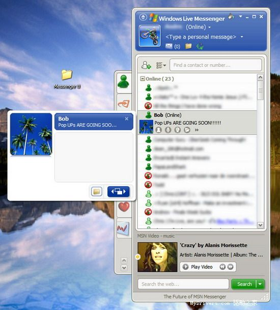

MSN Messenger
The after-school network that ran on nudges, emoticons, and whatever song you were playing.

On July 22, 1999, Microsoft launched MSN Messenger, and for the next decade, in a large part of the world, the sound of home was the sound of someone signing in. [S1]
What it defined was an era of after-school chatting. The buddy list, the nudge -- that violent little shake of the chat window demanding attention -- the custom emoticons built pixel by pixel by hand, and the status line that displayed the song currently playing: a whole culture of communication ran through those four features. [S1]
Look at that list closely, because it is a prophecy. A status message that told people what you were listening to. Custom pictures for your moods. A compulsive need to signal availability. Every one of those teenage habits is now a billion-dollar product category. The kids negotiating curfews over nudges in 2004 were rehearsing the entire future of social software, they just did not know it, and neither did Microsoft. [S1]
The mid-2000s brought the rebrand: as part of the Windows Live wave, the service was renamed Windows Live Messenger. By most accounts the users never followed -- it was "MSN" at launch, "MSN" at the peak, and "MSN" in every graveyard conversation since, which is its own small lesson in brand ownership: the customers own the name. [S1]
Microsoft retired the service in most markets in 2013, in favor of Skype, which it had bought. The word "favor" is doing quiet work in that sentence; the users did not favor Skype, and the farewell threads of the era read like a school reunion held in a demolition site. But one region kept the lights on: mainland China ran the service until October 31, 2014, the last place on earth where the sign-in sound still meant someone wanted to talk. [S1]
The protocol had a stranger afterlife than the brand. When Skype took over, its infrastructure ended up speaking the Messenger network's language -- a detail Hacker News surfaced years later in a thread on how Skype had switched to the MSN Messenger protocol, where the old service's ghost in the machine drew a small, knowing crowd. [S2]
What was lost was less a tool than a room. Other messengers existed before and after; what did not persist was the specific arrangement -- a single buddy list shared by your entire school, a status line set to song lyrics, and an evening that began when the list came online. Modern messengers are corridors with many doors. This was one room where everybody sat.
In 1999 Microsoft built a window that shook when your friend wanted you. In 2014 the last window closed, in the last country, and the after-school internet became something you had to be older to remember.
Remembered: the nudge, the hand-drawn emoticon, and the song in the status line.
Sources
- S1: Wikipedia: Windows Live Messenger -- https://en.wikipedia.org/wiki/Windows_Live_Messenger
- S2: Hacker News (2015-06-26) -- https://news.ycombinator.com/item?id=9785843
PROVENANCE
| Exhibit no.: | 011 |
| Data-source mode: | facts: seed-corpus; wikipedia-unreachable; wayback-cdx-unreachable; hn-algolia (live, subject query) |
| Illustration: | sourced image -- Bing image search, retrieved 2026-08-29 |
| Found via: | bing-image-search |
| Image url: | https://image.woshipm.com/wp-files/2012/11/16414061254190294.jpg |
| Generated: | 2026-08-29 |
| Generator: | deadweb-pipeline 0.1 (deterministic scaffold) |
| Editorial pass: | web-product-engineer (editorial pass 2) |
| Status: | published |
| Source page: | https://www.woshipm.com/it/10204.html |
SOURCES
- Wikipedia: Windows Live Messenger -- https://en.wikipedia.org/wiki/Windows_Live_Messenger
- Hacker News thread: "Skype Switched to the MSN Messenger Protocol (2014)" (2015-06-26) -- https://news.ycombinator.com/item?id=9785843